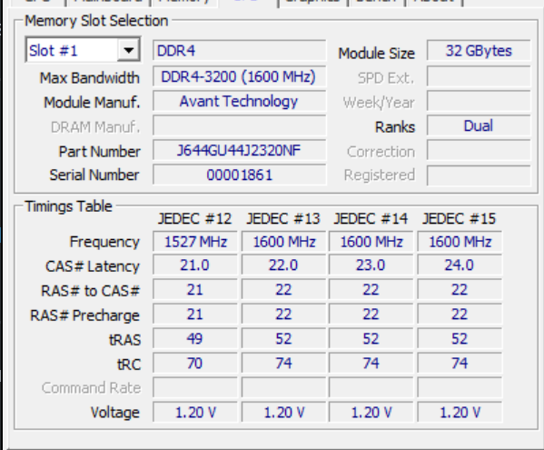
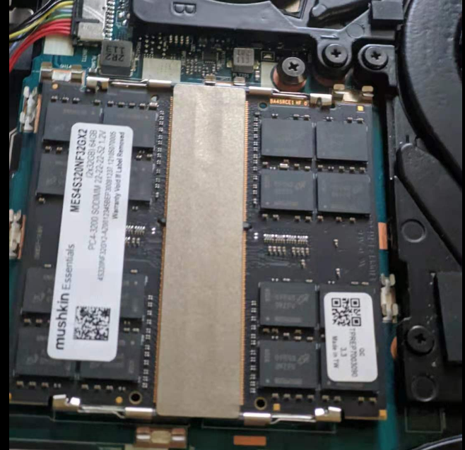
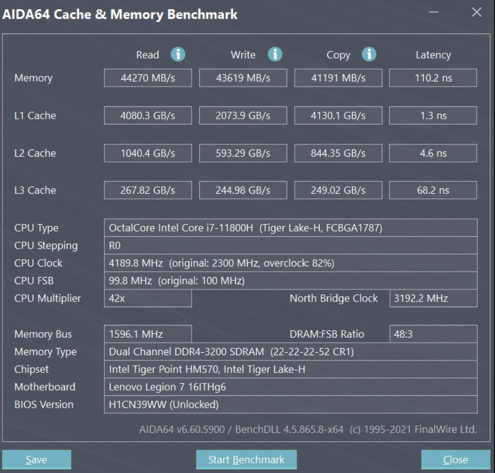
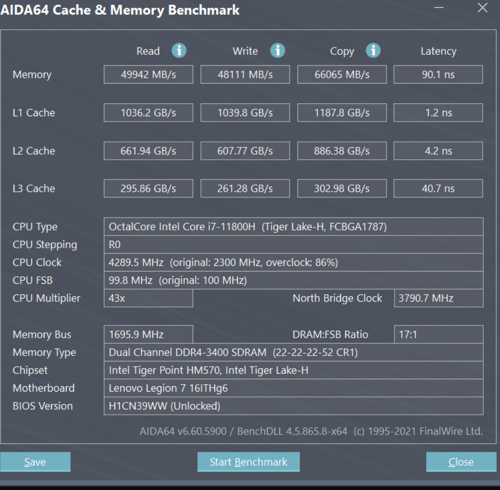
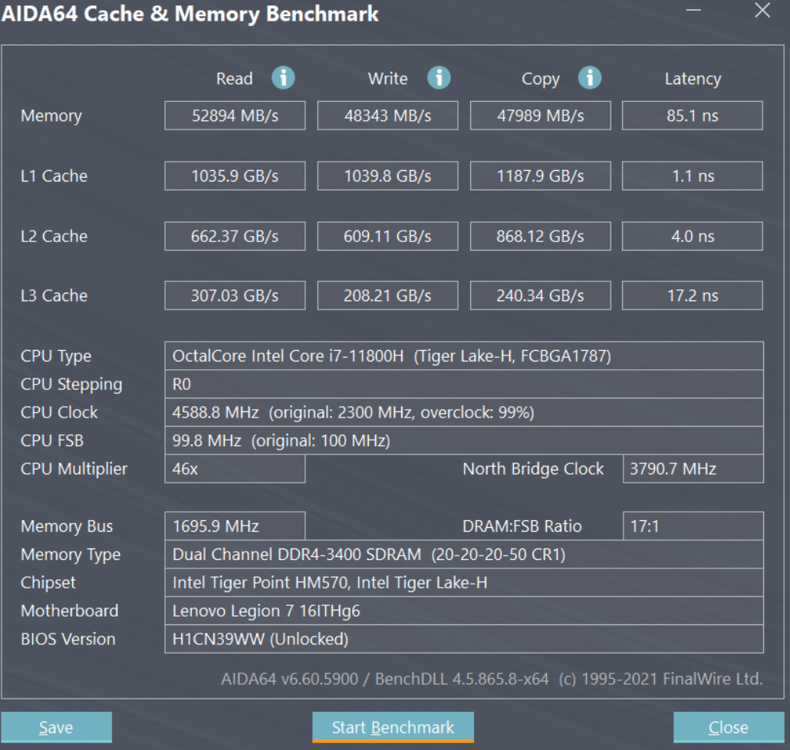
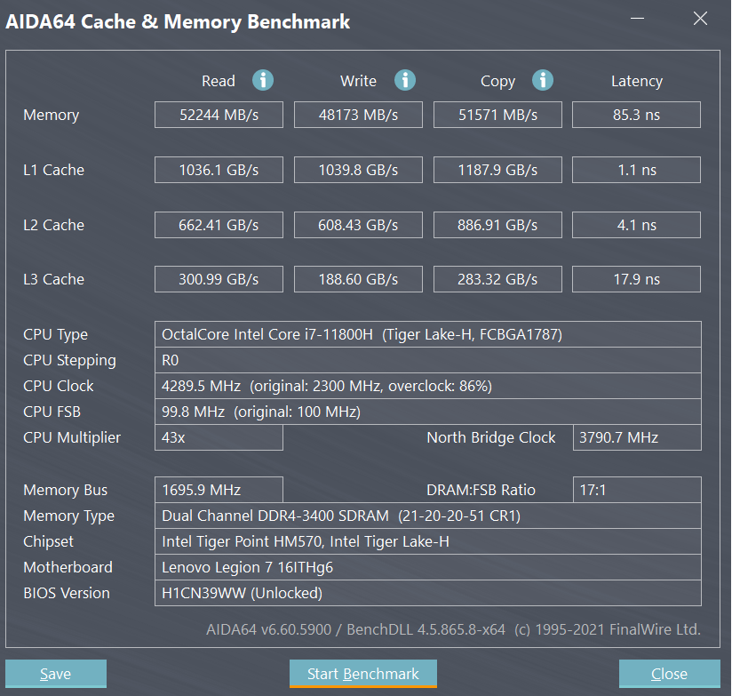
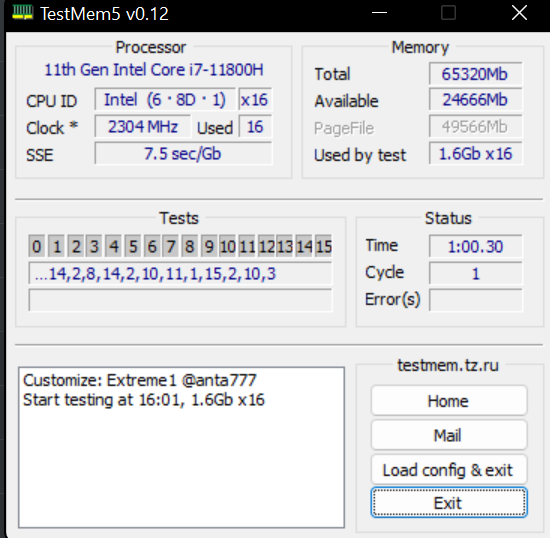

Prologue
When I first bricked my brand new Legion 7i back in last August, I was convinced that resetting CMOS does not have any affect on Lenovo’s mobo. Now it turns out that it is partially true.
Weird Reddit post
This reddit post talks about how he used XMP on the AMD counterpart while managing to un-brick using the unplug CMOS method.
I was shocked at first glance because I was clear that all of us on Discord that tried BIOS UV/OC and bricked did not manage to un-brick using the same method.
It was clear something was wrong.
Then, mentioning how his failed to post and only showed a black screen, one comment caught my eyes and grabbed my mind.
Based on our past experience, whenever the mobo feels not good about the timings/OC/UV you set, it does fail to post, and it does not show a black screen.
Theoretically. on Intel versions of the Legion, there is one option called self-healing that is turned on by default. What is hilarious about this, is that the AMD one has this disabled by default.
Why? Because of the stupid self-healing probably. I thought so at the beginning.
Well, it might not be true. Today I read the comment and was temped to give RAM OC and CMOS reset a try. (I don’t have to mess around with UV anymore because I figured out that -70mv is the best and I set that in BIOS already)
My RAM kit
My RAM kit is a crappy 3200MHz, CL22@1.2v one from Mushkin Essentials, an unknown sub-brand owned by Avant Tech., another non-popular American company. The manufacturer mainly uses SK Hynix chips due to its low costs while mine actually is using Micron chips.(SPD was empty somehow)

Like I said, my kit came with Micron chips, with the following code printed clearly on the two-sided stick:0FE45D9ZFV

2Rx8 chips are embedded on each sides, making it a 32Gx2 Dual Rank kit
According to Micron documents, it means: 2020-10th_week-E-die-japan-china
By looking up in Micron’s database, it corresponds to this:
| Part Number | FBGA Code |
|---|---|
| MT40A2G8JC-062E:E | D9ZFV |
MT40A2G8JC-062E | Micron Technologies, Inc

Get hands dirty
Long story short, with the above information in mind, I know that this kit cannot be OC’ed much. I also know that I should disable self-healing while at it.
So my first shot was 3200MHz, 18-19-19-36@1.35v. This simply did not post. Okay, so I unplugged the battery and CMOS battery. Pressed and hold the power button for like a min. Then plugged them back in. Pressed the button again, magically, it posted and booted right into Windows.
Yawn, I know this sucks, so I tried a milder OC, 3200MHz, 21-21-21-47@1.2v. This booted just fine.
I guessed it could be pushed even more, thus next I tried 3200MHz, 19-20-20-40@1.35v. And it booted as well. However, as I ran a Cache and Mem test in AIDA64, the screen froze when it’s running the write test.
I almost gave up, did another trial with 3400MHz, 22-22-52@1.35v. Surprisingly, it cripplingly booted and passed the AIDA64 benchmark!

Latency almost dropped by 20%, and read/write increased significantly as well.
Final results
I wanted more so I eventually set it to 3400MHz, 20-20-50@1.35v.

It did not pass the TM5 stress test, but it seems fine so far. At least it ran the AIDA64 bench without any issues.
I’ll check out games and Time spy later today. Hopefully it will weather the stress.
Data analysis
Before OC (baseline):
| CLK | CL | tRCD/RP | tRAS | tRFC | R | W | Cp | Latency |
|---|---|---|---|---|---|---|---|---|
| 3200 | 22 | 22 | 52 | 560 | 44270 | 43619 | 41191 | 110 |
After OC:
| Result | CLK | CL | tRCD/RP | tRAS | tRFC | R | W | Cp | Latency |
|---|---|---|---|---|---|---|---|---|---|
| ❎ | 3200 | 18 | 19 | 36 | 480 | N/A | N/A | N/A | N/A |
| ✅ | 3200 | 21 | 21 | 47 | 480 | N/A | N/A | N/A | N/A |
| ❎ | 3200 | 19 | 20 | 40 | 480 | N/A | N//A | N/A | N/A |
| ✅ | 3400 | 22 | 22 | 52 | 560 | 49942 | 48111 | 66065 | 85 |
| ❎ | 3400 | 20 | 20 | 50 | 560 | 52894 | 48343 | 47989 | 85 |
| ❎ | 3400 | 21 | 20 | 51 | 560 | 52244 | 48173 | 51571 | 85 |
| ✅ | 3400 | 21 | 21 | 51 | 560 | 52352 | 48136 | 51306 | 86 |
Memory clocks are measured in MHz. Read, write and copy speeds are measured in MB/s. Latencies are measured in ns.
Update
Played Tomb Raider, which I got from Epic Games, for 30 minutes, and it seems all good. Played League of Legends for another 23 minutes, no BSOD yet.
Update #2
It gave me a frozen screen while playing my second Aram game in LOL.
(Sigh…)

As you can see I bumped the timings a bit, and it does not seem to be losing performance in the benchmark. Let’s see if this can hold any longer.
Update #3
Well, it crashed again. Now I’ve slackened the timings even more, and I am running the TM5 with Extreme1@anta777 again; it’s been 1 hour without an error.

I guess I should work on timings more next time it crashes(it probably never will).

PIPIPIG233666
There is nothing good or bad, but thinking makes it so